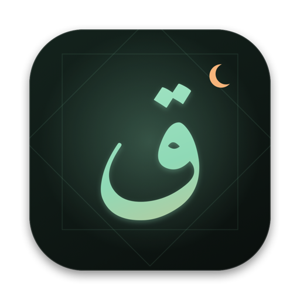
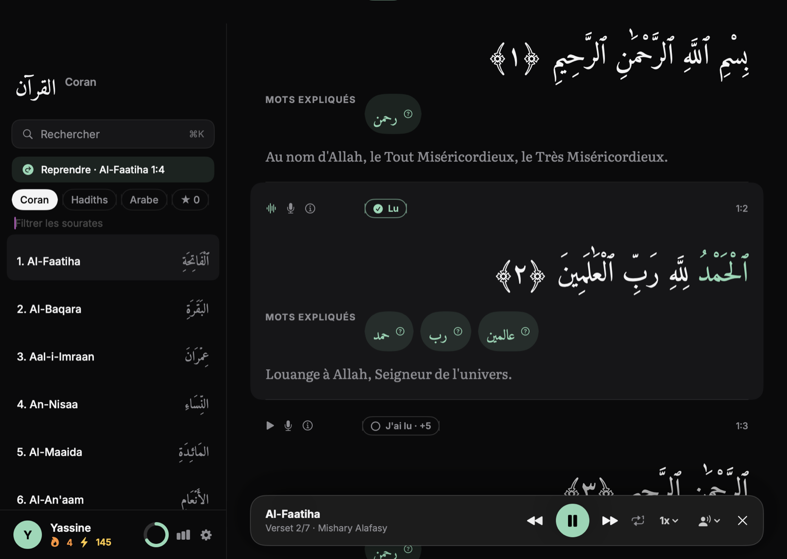
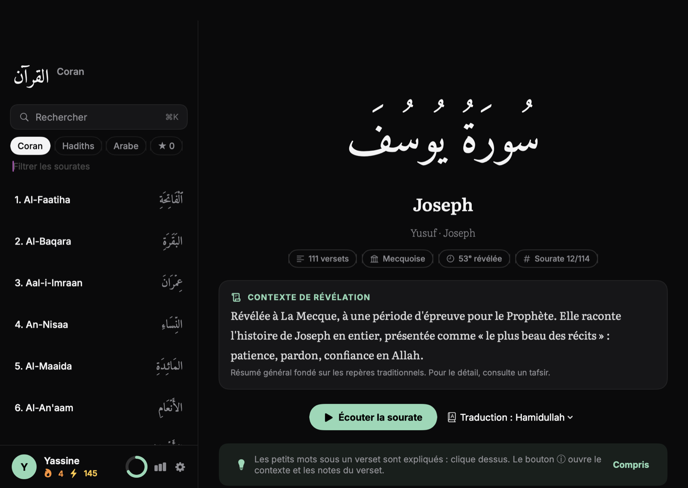
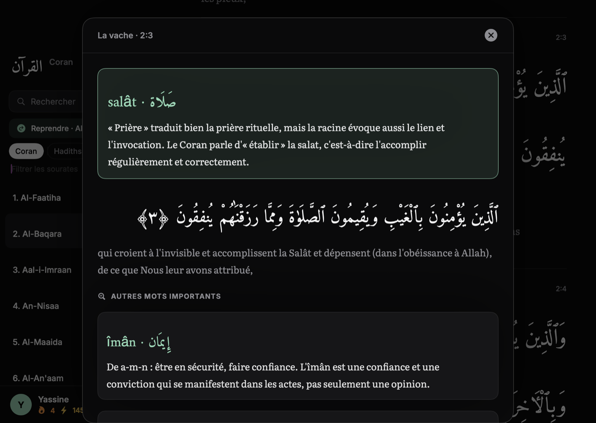
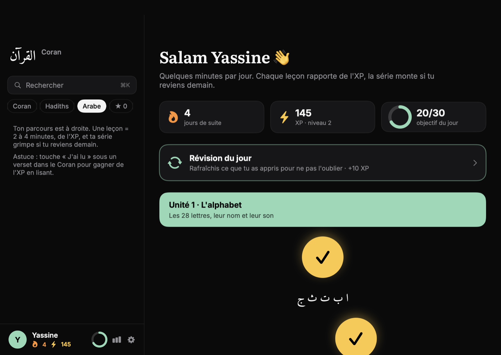
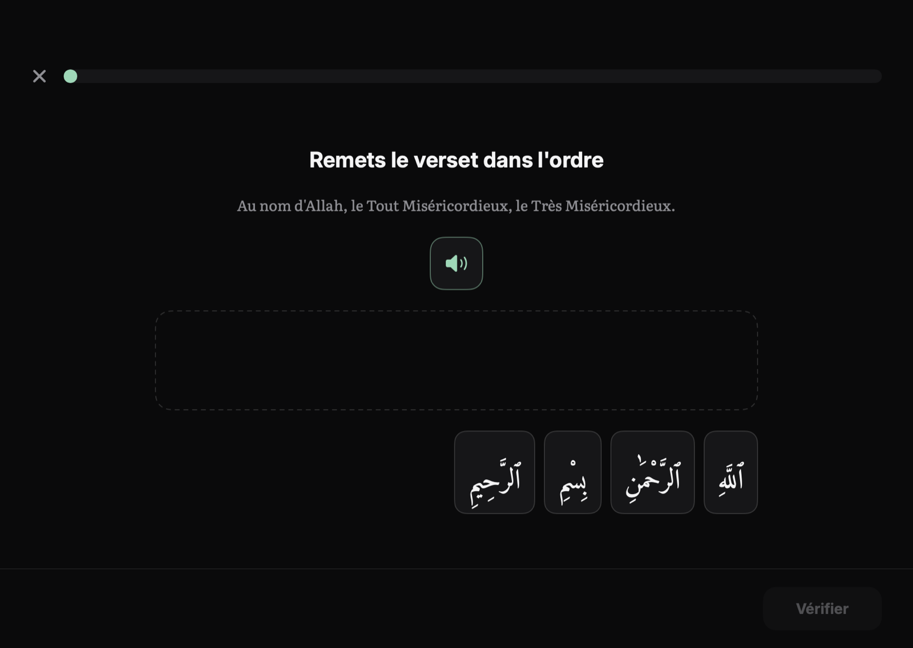
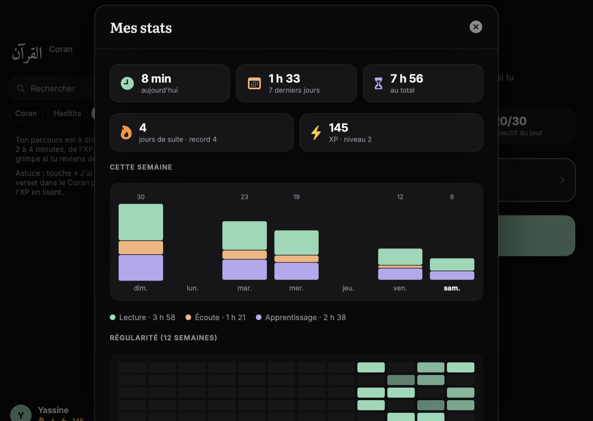
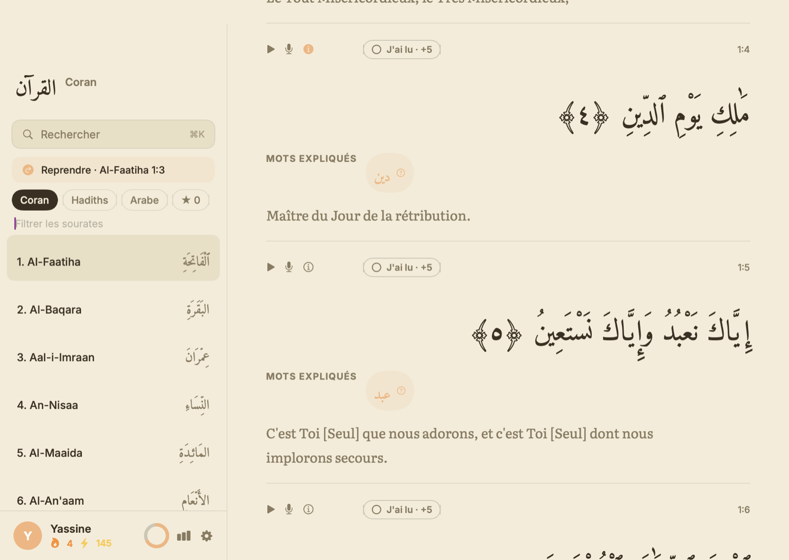

Une app Mac gratuite et native pour lire, écouter et apprendre. Tape une référence comme 2:255, appuie sur Entrée : le verset est là.

Lance une sourate ou un seul verset : le verset en cours est surligné, les mots se colorent au rythme de la voix et la page défile toute seule.

Chaque sourate affiche son nom français, son lieu et son ordre de révélation, avec un résumé du contexte. Sous les versets, un bouton ⓘ ouvre les notes.

Des leçons courtes façon jeu : de l'alphabet jusqu'à remettre un verset dans l'ordre. L'XP, la série de jours et l'objectif quotidien font le reste.



Récite un verset au micro : l'app compare avec le texte et marque en vert ou en rouge chaque mot reconnu.
Temps de lecture, d'écoute et d'apprentissage, régularité sur 12 semaines, versets lus.
Les 40 hadiths de Nawawi et les 40 hadiths qudsi, en arabe et en français.
Une sourate (« bakara »), une référence, un mot en français ou en arabe.
Thèmes sombre, sépia et clair, six couleurs pastel, taille de l'arabe réglable.
Pas de compte, pas de suivi. Ta progression reste sur ton Mac.

| ⌘K | Rechercher une sourate, un verset, un mot |
| ⌘+ ⌘− | Taille de l'arabe |
| ⇧⌘L | Changer de thème |
| ⌘T | Afficher ou masquer la traduction |
| ⌘] ⌘[ | Sourate suivante ou précédente |
| 1–4 ↩ | Répondre et valider dans une leçon |
xattr -cr /Applications/Coran.app